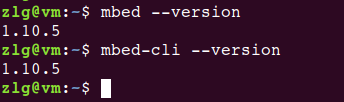
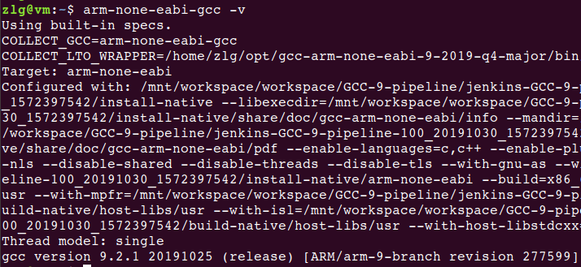
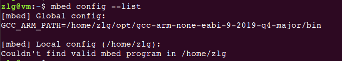
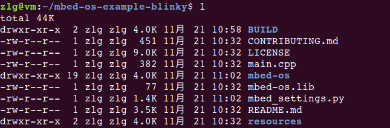
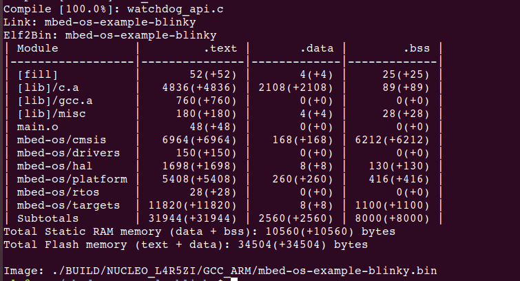
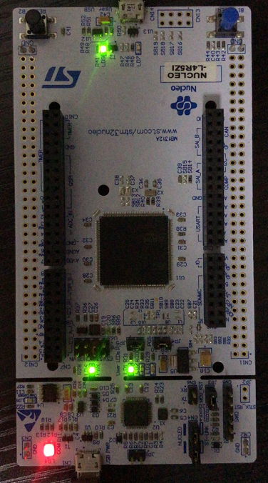

8. mbedOS移植到STM32L4R5ZI开发板
说明：本次的操作基于虚拟机完成，搭载系统为Ubuntu18.04。
8.1. 安装依赖的软件
安装Git
sudo apt install git -y
安装Python
sudo apt install python3 python3-pip -y
安装Mercurial
sudo apt install mercurial -y
8.2. 安装Mbed-CLI
安装
python3 -m pip install mbed-cli
安装完成后，注销一下虚拟机，启动后可通过如下命令，验证结果：
mbed –version
mbed-cli –version如下图表示安装成功：
升级
python3 -m pip install -U mbed-cli
8.3. 下载交叉编译工具链
当前支持的工具链有两种Arm Compiler和GNU Arm Embedded Compiler，本次我们选择GNU Arm Embedded Compiler，下载地址为：gcc-arm-none-eabi-9-2019-q4-major-x86_64-linux.tar.bz2
下载、解压完成后，将交叉编译工具链放置在${HOME}/opt目录下；
配置系统的环境变量，修改.bashrc文件，在文件的末尾添加如下内容：
export PATH=$PATH:${HOME}/opt/gcc-arm-none-eabi-9-2019-q4-major/bin
添加完成后，可用如下命令，验证配置是否生效：
arm-none-eabi-gcc -v
正确完成后，结果如下：

8.4. 配置mbed
可使用如下命令配置mbed交叉编译工具的路径：
mbed config -G GCC_ARM_PATH “${HOME}/opt/gcc-arm-none-eabi-9-2019-q4-major/bin”
配置完成后，确认配置是否生效：
mbed config –list
正确完成时，结果如下：

8.5. 导入官方的例程
mbedOS在官方仓库中提供了众多的示例，本次我们选择mbed-os-example-blinky演示开发流程。
官方的例程仓库在github上，访问速度慢，以下提供gitee fork后的官方例程，供大家使用。
可使用如下命令clone：
git clone https://gitee.com/null_752_5567/mbed-os-example-blinky.git
然后使用如下命令同步mbed-os-example-blinky例程的其他依赖项：
cd mbed-os_example-blinky
mbed deploy
想要尝试import github上官方例程的方法也提供如下。
可以使用如下命令导入mbed-os-example-blinky：
mbed import mbed-os-example-blinky
中间拉取mbed-os，由于网速，可能会失败，如果失败，可以执行如下命令，继续同步动作：
cd mbed-os_example-blinky
mbed deploy
同步完成后，mbed-os-example-blinky目录中有如下内容：

8.6. 生成针对STM32L4R5ZI开发板的bin文件
执行如下命令：
mbed compile -m NUCLEO_L4R5ZI -t GCC_ARM
-m 选项指定目标开发板
-t 选项指定使用的交叉编译器
编译完成后，结果如下：

在BUILD/NUCLEO_L4R5ZI/GCC_ARM目录下生成了mbed-os-example-blinky.bin，可以将bin文件下载到板子中，按下板子的Reset按键，看到板子对应的LED灯以500ms的频率闪烁。
